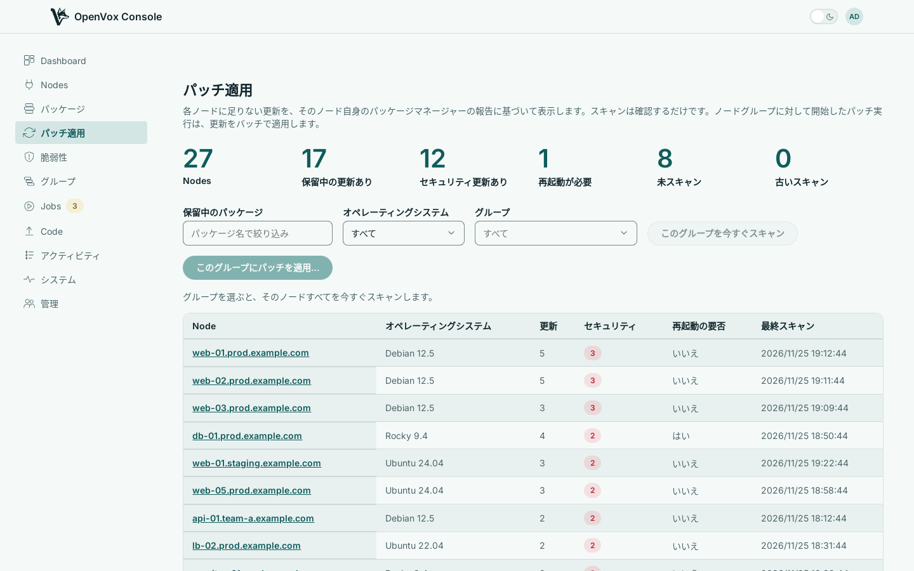

Linux の Node をスキャンして不足している更新を見つけ、問題のある更新がフリート全体に広がる前に止められる仕組みを備えたバッチ単位で適用します。
各 Node のパッケージマネージャーが報告する、保留中の更新
スキャンでは、Node のエージェントに apt、dnf、yum を何も変更しないモードで実行させ、保留中の各更新を、インストール済みのバージョン、利用可能なバージョン、パッケージマネージャーがセキュリティ更新とみなしているかどうかとともに表示します。Node は、すでに再起動が必要かどうかも報告します。
スキャンは、自分で管理するスケジュールで、または 1 台の Node やグループ全体に対して任意のタイミングで実行されます。スキャンできない Node は報告不能として一覧表示され — 完全にパッチ適用済みとして表示されることはありません。


安全停止付きのバッチ単位のパッチ適用
セキュリティ更新、すべての更新、または指定したパッケージを選び、同時にパッチを適用する Node の数を選びます。何回失敗したら実行を終了するかを設定すれば、問題が起きた時点でそれ以降のバッチは開始されません。何もインストールしないドライランでプレビューし、必要な Node は完了後に再起動させることができます。
進捗は Node ごとに表示されます。途中で応答しなくなった Node は、いつまでも止まったままになるのではなくその旨が報告され、完了すると Node が再スキャンされるため、ページには実際に残っているものが表示されます。
Windows、macOS、zypper (SUSE) の Node はスキャンされません。それらは報告不能として一覧表示されるため、カバレッジの欠落が問題なしと誤解されることなく、目に見える形になります。
やってみる
Linux の Node をスキャンして保留中のパッケージ更新を見つけ、ドライラン、停止しきい値、任意の再起動を備えたバッチ単位でパッチを適用します。
OpenVox Console は、push のたびに amd64 と arm64 向けにビルドされるコンテナイメージと、単一のバイナリとして提供されます。インストールガイドでは、コンテナまたはパッケージを使って、空のホストから openvoxserver、openvoxdb、Postgres、コンソールからなる稼働するデプロイまでを案内します。